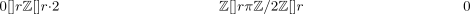
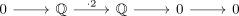
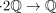

rationals not faithfully flat over Z
1. Proposition
The rationals are not a faithfully flat $$-module
2. Proof
consider

Then applying the tensor sequence results in

where

is a module-isomorphism, hence by exact and isomorphism